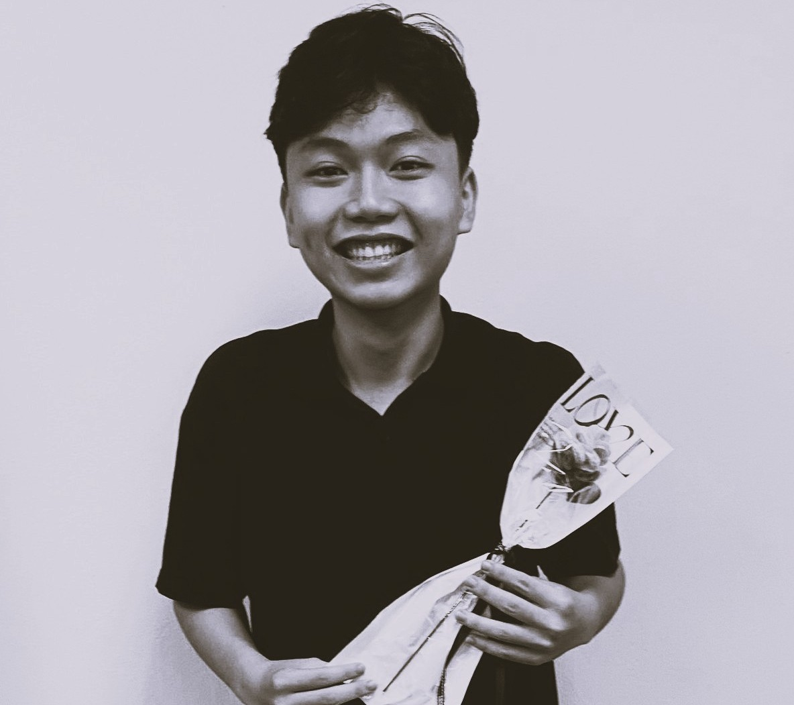
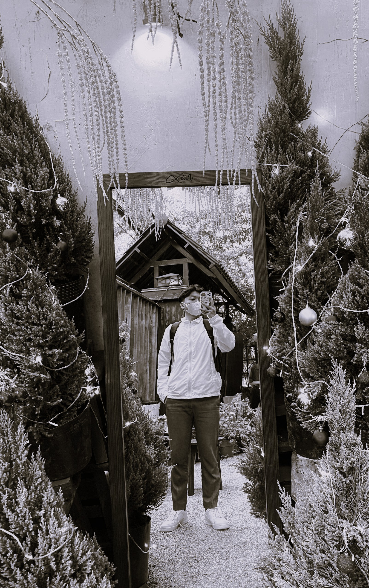

A bold leap into the era of Industry 4.0, where embedded systems thinking seamlessly integrates with artificial intelligence to create smart, optimized, and sustainable solutions. Driven by a spirit of continuous innovation, I blend a solid technical foundation with creativity, bringing a unique and deeply personal touch to every project.